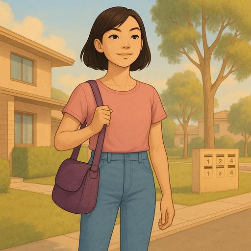
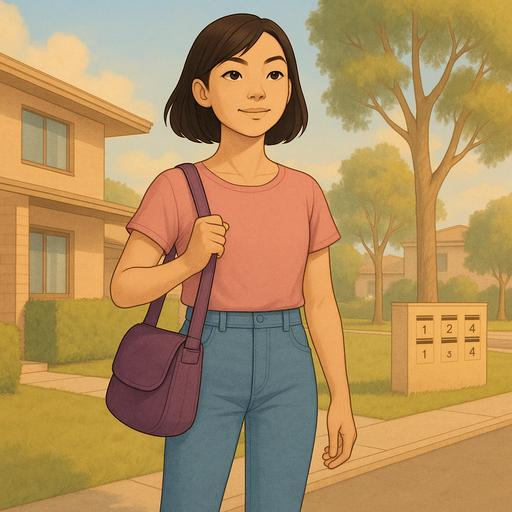

Jing knows more challenges will come, but she feels prepared. With determination, she believes she can build a comfortable life in Australia. With each day, Jing embraces the adventure with hope.


"Jing's Journey: Renting a New Home in Australia" p. 15/15